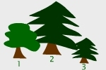
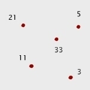
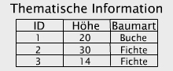
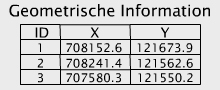

Zusammenfassung
In dieser Lektion wurden die Bedeutung einer datenbankgestützten Datenverwaltung und die Rolle eines Datenbanksystems innerhalb eines Geoinformationssystems (GIS) erläutert. Dazu wurden eingangs Begriffe wie Datenbanksystem und Geoinformationssystem definiert bzw. wiederholt und erneut in den Kontext der Begriffe Daten und Informationen gestellt. Zu den maßgebenden Eigenschaften des Datenbankansatzes gehören die Mehrfachnutzung sowie die Strukturierung und Beschreibung der Daten. Weiter wurden die Vorteile der Trennung von Daten und Anwendungen und die verschiedenen Merkmale zur Gewährleistung einer hohen Zuverlässigkeit und Datensicherheit behandelt, namentlich die Konzepte der Transaktionen und der Datensichten.
Weiterhin wurden die Relation als das wichtigste logische Datenbankmodell in GI-Systemen vorgestellt. Logische Datenbankmodelle stellen die Grundregeln zur Verfügung, um ein konzeptionelles Schema in eine bestimmte Datenbankumgebung zu übertragen. Diese Datenbeschreibung bildet die Grundlage, um anschließend reale Datenbanken (Instanzen) mit den eigentlichen Daten zu erzeugen und zu verwalten. In der Folge haben wir das 3-Schema-Konzept kennengelernt. Die Drei-Schema-Architektur erweitert das logische Schema um ein internes und ein externes Schema. Die Dreiteilung wiederum bildet eine wichtige Voraussetzung für die Datenunabhängigkeit und für die Realisierung von Schnittstellen für die Kommunikation zwischen Anwendung und Datenbankverwaltungssystem.
Die meisten GI-Systeme speichern die räumlichen Daten und deren Attribute in Relationen. Zusammengehörige Zeilen (Tupel) sind über einen Schlüssel verknüpft. Das erlaubt dem Nutzer die Suche und Darstellung von Attributwerten aufgrund räumlicher und thematischer Suchkriterien.
0-dimensionale thematische und räumliche Merkmale
  |
  |
Die Flexibilität eines GI-Systems ist enorm. Der Benutzer kann in der geometrischen Darstellung der Daten ein Objekt wählen und sich dessen Eigenschaften anzeigen lassen. Er kann aber auch ausgehend von einem gewählten Eintrag in der Attributtabelle zum entsprechenden geometrischen Objekt gelangen.
Die Relation sichert den konsistenten Zusammenhang der geometrischen und thematischen Daten. Neben geometrischen Eigenschaften sind topologische Eigenschaften von Bedeutung. Sie äußern sich in Beziehungen der Nachbarschaft, des Enthaltenseins, der Überschneidung und Ähnlichem.